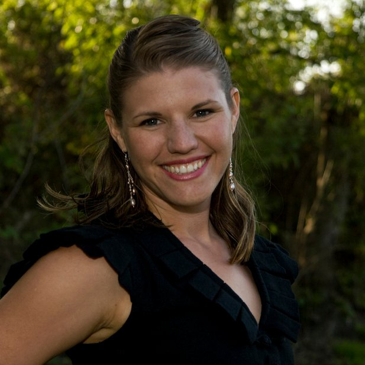
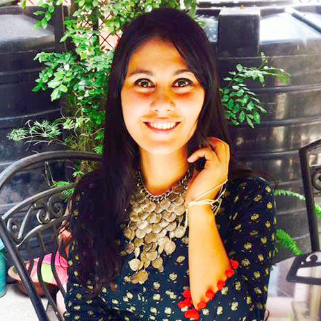

Staff:

Katrina Zavalney, USA
Executive Director
Carlos Munoz Kampff, USA
Communications Director and Accounting

Sarala Tiwari, Nepal
Cultural Assistance and Administration
John Zavalney, USA
Treasurer
About Us:
Staff:
Katrina Zavalney , USA– Executive Director
Carlos Kampff, USA – Communications Director and Accounting
Sarala Tiwari, Nepal – Cultural Assistance and Administration
John Zavalney, USA - Treasurer
Board:
Katrina Zavalney – President
Kathia Laszlo – Secretary
Barry Cogbill
Karri Winn
Partners:
The Relief Trust
http://www.therelieftrust.org/
Partner to lead the life skills programming and connections to government officials. This partner does trauma relief work through counseling and leads trainings in communication and emotional intelligence work for community development.
Nonprofit Mission:
Aranya Solutions purpose is to enrich the quality of life within targeted economically challenged and developing areas such as Nepal. Aranya Solutions develops systematic changes with a focus on localization serving as a bridge to resources and providing necessary infrastructure. Our method is to assist communities to implement environmentally friendly building and agricultural methods, life skills workshops, local business development, leadership training, education initiatives, and capacity building.
Theory of Change:
We serve the under served....
Scale Gaps...
Empowerment based...
We use an action research process in an informal interview setting for participants to be relaxed and offer honest answers on issues related to the target area. We then assist organizations/ communities to develop a structure to more efficiently meet their needs. Most things will be done in partnership and collaboration where Aranya Solutions acts a bridge to resources and infrastructure.
Criteria for Projects and Partners:
We will work with those that align with the values of Sustainable Land Use, Community Development and Sustainable Solutions locally and globally. The project must align with the UN Sustainable Development Goals and bring positive impact to the environment and people. It is important that the work will not bring harm to people, animals or the planet.
What Aranya Means:
Aranya means "Bountiful Forest" in Sanskrit. It signifies plentitude, generosity, resources, and prosperity. We
believe there are enough resources to go around and we can help identify the resources for abundance, pollinate like bees!
Aranya delivers a sense of responsibility, love, and balance. We are ever helpful, conscientious, and quite capable of recifying inharmonious situations. Aranya is devoted to the betterment of community and ecology with a depth of understanding that evokes sympathy, kindness, and generosity. Openness and honesty are apparent in Arayna's approach to all relations.
Our Story: (I will edit this and send you a better version, this is to start)
This nonprofit is being formed to fill an important niche of working directly with the community in collaboration with local organizations and providing leadership development skills for long term public health and sustainability. The purpose of having a nonprofit in the USA is to raise funds from the States to bring to places that are in greater need, as a direct channel for fundraising efforts for maximum impact.
Aranya Solutions is a nonprofit registered in the state of Montana 2018 and we are in process of obtaining our 501c3 status. We formed a nonprofit to serve the under served, starting our work in Nepal after seeing the needs for more support on the ground and for fundraising. Aranya Solutions serves organizations and communities dedicated to making the world a better place. We create and facilitate strategies for efficiency.
We successfully completed the needs assessment for the Digam Village Community Development project in the Fall of 2017. We developed a calendar of activities for 2018 for programs to meet the needs of the village assessed. We identified programs for the next 4 years for agriculture, education, health, leadership and community development.